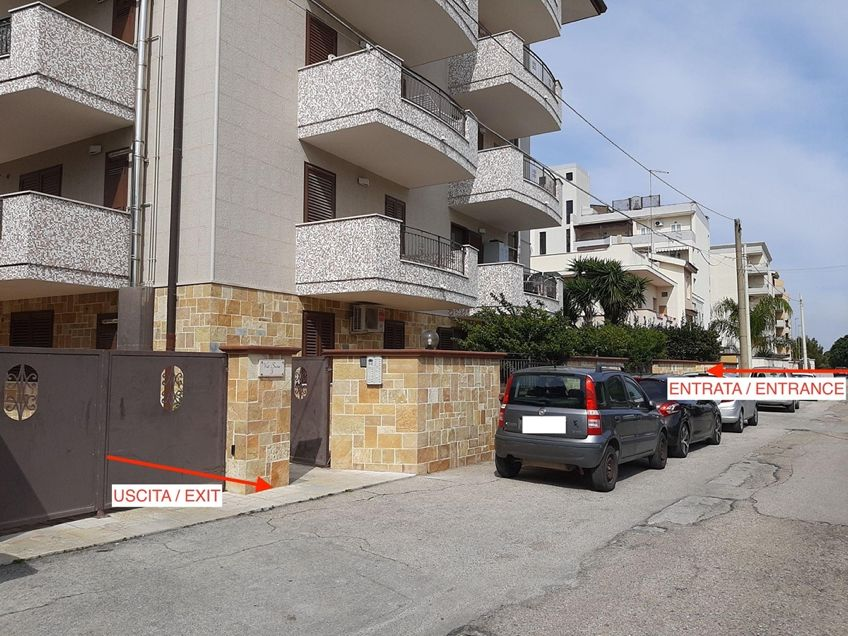
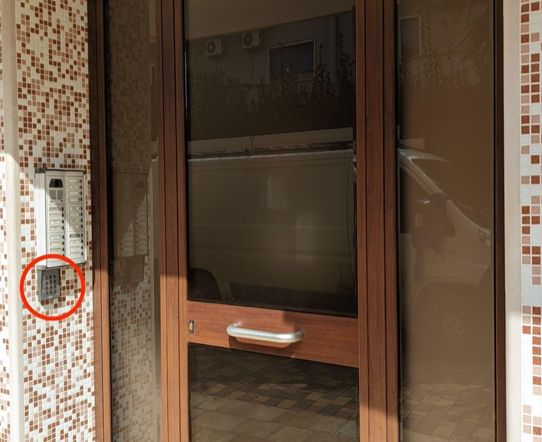
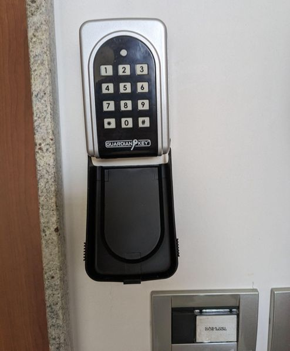

Below you'll find everything you need to access the apartment. You'll be using two 4-digit codes, which we'll send you after you share passport photos of all guests via WhatsApp or email to lucia.baldelli@gmail.com and marco.lattarulo@gmail.com.
We are at Via Suri 3, San Vito, Taranto — open in Google Maps.
On arrival, please park outside the main gate. If you prefer to park inside, use the gate marked ENTRANCE (see photo below). The remote control in the apartment opens both gates: bottom-left button to enter, top-left button to exit.


Next to the intercom you'll find a keypad. Enter the FIRST CODE + * (asterisk) to open the pedestrian gate.

Use the FIRST CODE + * (asterisk) once again on the keypad at the building entrance door to get inside.

Take the lift (or stairs) to the third floor. Our apartment is on the right-hand side as you exit the lift.
Outside the apartment door you'll find a small key safe. Pull down its black cover, then enter the SECOND CODE + # (hashtag) to open it and retrieve your keys.

Need help?
We're always available. Don't hesitate to reach out via WhatsApp or email:
lucia.baldelli@gmail.com ·
marco.lattarulo@gmail.com
We hope you have a wonderful stay. Thank you for choosing us! 🌊
Qui sotto trovate tutto ciò che vi serve per accedere all'appartamento. Avrete bisogno di due codici a 4 cifre, che vi invieremo dopo aver ricevuto le foto dei passaporti di tutti gli ospiti via WhatsApp o email a lucia.baldelli@gmail.com e marco.lattarulo@gmail.com.
Siamo in Via Suri 3, San Vito, Taranto — apri in Google Maps.
All'arrivo potete parcheggiare fuori dal cancello principale. Se preferite parcheggiare all'interno, usate il cancello contrassegnato come ENTRATA (vedi foto). Il telecomando nell'appartamento apre entrambi i cancelli: il tasto in basso a sinistra per entrare, il tasto in alto a sinistra per uscire.
Accanto al citofono troverete un tastierino. Digitate il PRIMO CODICE + * (asterisco) per aprire il cancelletto pedonale.
Usate di nuovo il PRIMO CODICE + * (asterisco) sul tastierino della porta d'ingresso del condominio per entrare nell'edificio.
Prendete l'ascensore (o le scale) fino al terzo piano. Il nostro appartamento è sul lato destro uscendo dall'ascensore.
Davanti alla porta troverete una piccola cassetta di sicurezza per le chiavi. Abbassate il coperchio nero, quindi digitate il SECONDO CODICE + # (cancelletto) per aprirla e ritirare le chiavi.
Avete bisogno di aiuto?
Siamo sempre disponibili. Contattateci via WhatsApp o email:
lucia.baldelli@gmail.com ·
marco.lattarulo@gmail.com
Vi auguriamo un soggiorno meraviglioso. Grazie per aver scelto noi! 🌊